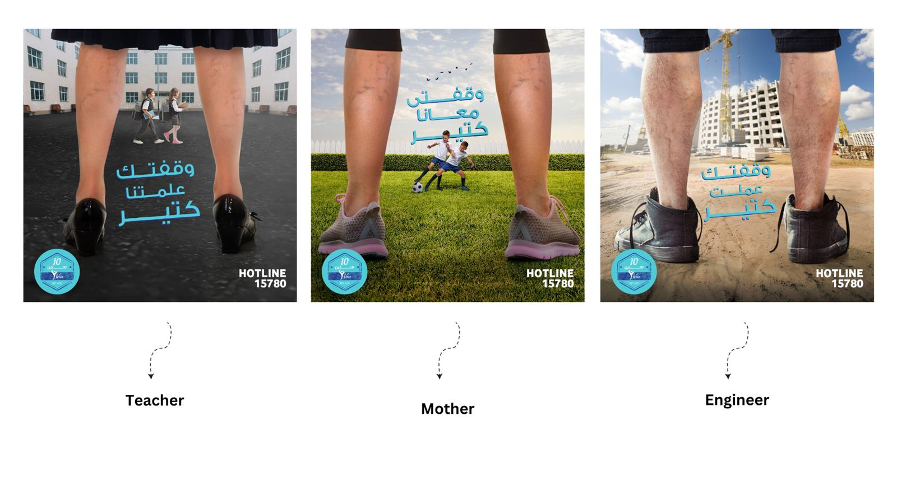
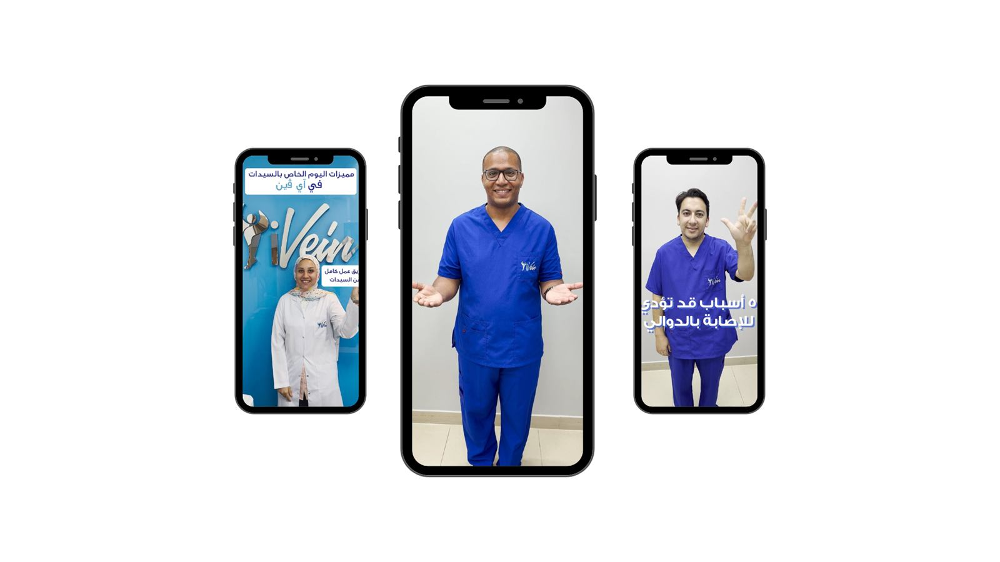

iVein Clinic, specialized in treating varicose veins, is the first of its kind in Egypt and the Middle East.
Evolve how people perceive iVein clinics on its 10th anniversary; go beyond rational USPs to increase sales and differentiate from competitors.
The physical toll of varicose veins caused by prolonged standing leaves individuals feeling undervalued for their sacrifices, fostering a sense of solitude.
Tap into the unmet need for recognition and support among individuals with varicose veins from prolonged standing — acknowledge them and address physical discomfort and emotional isolation.
Hardworking professionals dealing with varicose veins from prolonged standing — healthcare workers, teachers — seeking both medical relief and emotional understanding.
Position the clinic as not only a provider of medical solutions but a champion for the hardworking individuals facing varicose vein challenges.
Step 1: emotional digital film recognizing hardworking individuals. Step 2: social campaign highlighting specific jobs/roles. Step 3: launched the brand's TikTok presence with lighthearted, entertaining content where the audience actually spends time.
Competitive analysis + interviews with people who have varicose veins (family, friends, colleagues); identified the problem, found the opportunity, proceeded with strategy.

